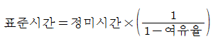
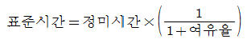
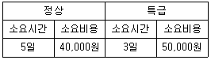

자동차정비기능장 (2006-04-02 기출문제)
1과목: 임의구분
1. 실린더의 간극체적(clearance volume)이 행정체적(stroke volume)의 20%인 오토사이클의 열효율은몇%인가?(단, 비열비(k)=1.4이다.)
- 35.23
- 46.23
- 48.16
- 51.16
(정답률: 20%)

2. 전자제어식 가솔린 분사장치의 크랭크 각 위치센서의 역할은?
- 단위시간당의 기관 회전속도 검출
- 단위시간당의 기관출력 검출
- 매 사이클당의 흡입공기량 계산
- 매 회전수당의 고압 송전횟수 검출
(정답률: 82%)
3. 어떤 동력계에 디젤기관을 직결하여 제동을 걸었다. 이때 비틀림 모멘트가 100kgf-m이며 회전수가 500rpm이었다. 이때 디젤기관의 발생동력(ps)은?
- 57.7
- 64.7
- 69.8
- 75.4
(정답률: 45%)
4. 다음 물질중에서 디젤기관의 연료에 첨가하는 항노크성 발화 촉진제가 아닌것은?
- 초산에틸
- 아초산아밀
- 사에틸납
- 초산아밀
(정답률: 83%)
5. 질코니아 소자를이용하여 만든 O2센서는 λ값 얼마를 경계로 출력이 급격하게 변하는가?
- 0.6
- 0.8
- 1.0
- 1.2
(정답률: 90%)
6. 디젤기관의 분사노즐에 요구되는 조건이 아닌것은?
- 후적이 일어나지 않게 할 것
- 분무의 입자, 크기를 크게 할 것
- 분무의 상태가 연소실의 구석구석까지 뿌려지게 할 것
- 연료를 미세한 안개모양으로 하여 쉽게 착화되게 할 것
(정답률: 91%)
7. 4행정 사이클기관의 총배기량 3670cc, 회전수 3600rpm, 도시평균유효압력이 9.2kgf/cm2일때 기관의 도시마력은 몇PS인가?
- 135
- 141
- 147
- 152
(정답률: 23%)
8. MPI(Multipoint Injection)계통의 차량에서 ECU(컴퓨터)로의 입력센서가 아닌것은?
- 공기흐름센서
- 산소센서
- 스로틀포지션센서
- 퍼지컨트롤 센서
(정답률: 84%)
9. 전자제어가솔린 분사기관의 연료펌프 내에 설치 된 밸브 중 연료압력이 일정 압력 이상 상승하면 연료를 연료탱크로 바이패스시켜 연료펌프와 라인의 손상을 방지하는 것은?
- 첵밸브
- 진공 스위칭 밸브
- 핫 스타트 밸브
- 릴리프 밸브
(정답률: 76%)
10. 기관의전자제어 연료장치에서 인젝터 주요 구성품이 아닌 것은?
- 플런저
- 니들 밸브
- 솔레노이드 코일
- 압력조정 스프링
(정답률: 52%)
11. 기관실린더 벽의 유막이 끊어져 피스톤이나 실린더 벽에 상처를 일으키는 현상을 무엇이라고 하는가?
- 플러터(flutter)현상
- 스틱(stick)현상
- 프리 이그니션(preignition) 현상
- 스카프(scuff)현상
(정답률: 76%)
12. 내연기관의 기계효율 향상을 위한 대책이 아닌것은?
- 베어링 면적이 작은 베어링 사용
- 피스톤 측압 발생 증대
- 운동부분 증량 감소
- 배기저항 감소
(정답률: 66%)
13. 배출가스정화에 사용되는 촉매 물질의 종류가 아닌 것은?
- 산화촉매
- 3원촉매
- 흑연촉매
- 환원촉매
(정답률: 90%)
14. 발열기관에서 압력밸브와 부압밸브를 설치한 주요 목적이 아닌 것은?
- 압력조정
- 냉각효과 증대
- 동파방지
- 비점상승
(정답률: 70%)
15. 자동차 기관의회전속도가4500rpm이다. 연소 지연 시간이 1/600초라고하면 연소 지연 시간동안에 크랭크 축의 회전각도는 몇도인가?
- 15°
- 30°
- 45°
- 60°
(정답률: 60%)
16. 두께는 일정하나 폭과 절개부가 좁고 그 반대 방향의 폭이 넓으며 실린더 벽에 고루 압력을 가할 수 있는 링은?
- 원심형 링
- 팽창 링
- 편심형 링
- 동심형 링
(정답률: 71%)
17. 자동차의 배기장치에 대한 설명으로 틀린 것은?
- 기통수가 1개인 기관에서는 실린더에 배기 매니 폴드 없이 직접 배기 파이프를 부착한다 .
- 배기파이프는 배기가스를 외부로 방출하는 강관이며 배기가스 열의 일부를 발산하는 역할도 한다.
- 소음기를 부착하면 기관의 배압이 감소하고 출력이 높아진다.
- 배기관은 배기가스의 흐름에 저항을 주지 않아야 한다.
(정답률: 74%)
18. 연소에 있어서 공연비란 무엇을 의미하는가?
- 배기중에 포함되는 산소량
- 흡입공기량과 연료량과의 중량비
- 흡입공기체적과 연료량과의 비
- 흡입공기량과 연료체적과의 비
(정답률: 72%)
19. 문제가 되는 결과와 이에 대응하는 원인과의 관계를 알기 쉽게 도표로 나타낸 것은?
- 산포도
- 파레토도
- 히스토그램
- 특성요인도
(정답률: 59%)
20. 표준시간을내경법으로구하는수식은?
- 표준시간=정미시간+여유시간
- 표준시간=정미시간×(1+여유율)


(정답률: 74%)
2과목: 임의구분
21. 제품 공정분석표용공정도시기호 중정체 공정(Delay)기호는어느것인가?
- ○
- →
- D
- □
(정답률: 56%)
22. 다음 표를 이용하여 비용 구배(cost siope)를 구하면 얼마인가?

- 3,000원/일
- 4,000원/일
- 5,000원/일
- 6,000원/일
(정답률: 80%)
23. 계수값 규준형 1회 샘플링 검사에 대한 설명중 가장 거리가 먼내용은?
- 검사에 제출된 로트에 관한 사전의 정보는 샘플링 검사를 적용하는데 직접적으로 필요로 하지 않는다.
- 생산자측과 구매자측이 요구하는 품질보호를 동시에 만족시키도록 샘플링검사 방식을 선정한다.
- 파괴검사의 경우와 같이 전수검사가 불가능한때에는 사용할 수 없다.
- 1회만의 거래시에도 사용할 수 있다.
(정답률: 49%)
24. 다음중부하와능력의조정을도모하는것은?
- 진도관리
- 절차계획
- 공수계획
- 현품관리
(정답률: 45%)
25. 자동변속기에서 출력축에 설치되어 출력축의 회전속도에 따른 유압을 발생시키는 밸브는?
- 시프트 밸브
- 거버너 밸브
- 스로틀 밸브
- 매뉴얼 밸브
(정답률: 66%)
26. 자동차의 주행 저항에 해당되지 않는 것은?
- 구름저항
- 공기저항
- 등판 저항
- 구동저항
(정답률: 79%)
27. 디스크브레이크의 점검 항목이 아닌 것은?
- 디스크 마모의 손상
- 토크 플레이트 샤프트 시일링의 손상
- 하이드로 백 점검
- 디스크 런아우트 점검
(정답률: 73%)
28. 진공식브레이크 배력장치에 대한 설명으로 틀린 것은?
- 배력장치에 이용되는 외력으로 기관의 흡입부 압을 이용 한다.
- 배력장치가 고장일 경우 운전자의 페달 답력만으로도 브레이크를 조작할 수 있어야 한다.
- 진공식 배력장치는 응축수가 생성되는 단점이 있다.
- 진공식 배력장치에서 배력도는 다이아프램의 유효 직경에 비례한다.
(정답률: 68%)
29. 종감속 기어에서 구동피니언 잇수가 8개, 링기어 잇수가 40개인 차량이 평탄한 도로를 직진할 때 추진축의 회전수가 1800rpm이라면 액슬축의 회전수는?
- 366rpm
- 450rpm
- 510rpm
- 700rpm
(정답률: 32%)
30. 고속 주행시 타이어 스탠딩 웨이브 현상을 방지하기 위한 방법으로 맞는것은?
- 타이어의 공기압을 표준보다 낮춰준다.
- 타이어의 공기압을 표준보다 높여준다.
- 타이어의 공기압을 낮추되 광폭으로 교체한다.
- 휠을 알루미늄 휠로 교체한다.
(정답률: 75%)
31. 주행중 브레이크 페달을 밟게되면 차량의 무게가 앞으로 이동하면서 차체의 앞쪽은 내려가고 뒤쪽은 올라가는 현상을 무엇이라 하는가?
- ANTI-ROLL
- BOUNCING
- SQUART
- DIVE
(정답률: 60%)
32. ABS브레이크 장치에서 사용되는 구성품이 아닌 것은?
- ABS 컨트롤 유닛
- 휠 스피드 센서
- 리어차고센서
- 하이드로릭 유닛
(정답률: 89%)
33. 브레이크 페달의 지렛비가 5 : 1이다. 페달을 35kgf의 힘으로 밟았을때에 푸시로드에 작용되는 힘은?
- 7kgf
- 125kgf
- 175kgf
- 225kgf
(정답률: 63%)
34. 독립현가장치 중 맥퍼슨 형식의 특징이 아닌 것은?
- 스프링 윗부분 중량이 크기 때문에 접지성이 불량하다.
- 위시본 형식에 비해 구조가 간단하다.
- 부품수가 적으므로 마모나 손상을 발생하는 부분이 적고 수리가 용이하다.
- 엔진실 유효체적을 크게 할 수 있다.
(정답률: 68%)
35. 바퀴정렬의 목적이 아닌 것은?
- 조향 휠의 복원성 향상
- 주행속도의 증대
- 타이어 마모 감소
- 조향 휠의 조작력 경감
(정답률: 70%)
36. 자동 변속기 차량에서 스톨테스트(stall test) 결과 후 판단할 수 있는 내용으로 적당치 않은 것은?
- 엔진 출력 부족 여부
- 토크컨버터의 원웨이 클러치 작동여부
- 라인압력, 저하여부
- 킥다운 여부
(정답률: 68%)
37. 수동변속기에서 동기치합식의 장점이 아닌 것은?
- 변속소음이 거의 없고 변속이 용이하다.
- 변속기의 수명이 길다.
- 기어의 이가 헬리컬형이므로 하중 부담능력이 크다.
- 변속기 특별히 가속시키거나, 더블클러치를 조작할 필요가 있다.
(정답률: 83%)
38. 전자제어 4단 자동변속기(4EC-AT)에서 TCU(Trans Axle Control Unit)로 입력되는요소중 제너레이터(Pulse Generator)와같은 기능을 가진 부품은?
- 엔진회전속도
- 차속센서
- 크랭크각 센서
- 인히비터 스위치
(정답률: 67%)
39. 자동변속기에 사용되는 토크컨버터에서 크랭크샤프트와 직접 연결되어 구동하는 것은?
- 펌프 임펠러
- 터빈 러너
- 스테이터
- 원웨이 클러치
(정답률: 60%)
40. 조향각을 일정하게하고 차의 속도를 증가시켰을 대선회반경이 커지는 현상을표시하는 것은?
- 뉴트럴 스티어링
- 오버 스티어링
- 언더 스티어링
- 리버스 스티어링
(정답률: 87%)
3과목: 임의구분
41. 자동차가선회운동을할때구심력의역할을하는 것은?
- 코너링 포스
- 점착력
- 조향력
- 옆방향 힘
(정답률: 86%)
42. 다음 설명 중 틀린 것은?
- 드럼 브레이크에서는 자기작동에 의해 확장력이 증폭된다.
- 자동차의 총 제동력은 각 차륜에 작용하는 제동력의 합으로 표시한다.
- 자동차의 총 제동력은 제동시 질량에 의해 발생되는 관성력과 동일한 방향으로 작용한다.
- 최대 제동력을 점착 마찰계수에 비례한다.
(정답률: 54%)
43. 기관의 회전력이15.5kgf·m이고 3200rpm으로 회전하고 있다. 이때 클러치에 의해 전달되는 마력(PS)은?
- 56.3
- 61.3
- 66.3
- 69.3
(정답률: 38%)
44. 축전지를 방전상태로 오래두면 사용할 수 없는 가장 큰 이유는?
- 극판에 수소가 형성되기 때문에
- 극판에 묽은황산이 형성되기 때문에
- 황산이 증류수로 되기 때문에
- 극판이 영구황산납이 되기 때문에
(정답률: 77%)
45. 자동차에서 온도센서로 사용하는 부특성(NTC) 서미스터의 특성 중 맞는 것은?
- 온도가 올라가면 저항값도 같이 상승한다.
- 온도가 올라가면 저항값은 감소한다.
- 온도가 올라가면 저항값은 변하지 않는다.
- 온도가 올라가면 저항값은 상승하다가 감소한다.
(정답률: 79%)
46. 점화지연 시간이 1/800초 인연료를 사용하여 최고 폭발 압력을 ATDC 5T에서 발생시키기 위해 TDC 몇도 전방에서 스파크 불꽃을 튀겨 주어야 하는가?(단, 기관은2500rpm이다.)
- 13.7
- 17.9
- 18.7
- 21.7
(정답률: 31%)
47. 직권전동기에 가해지는 전압이11V, 전류50A 일 때 5000rpm이였다. 가해지는 전압이 7V가 되고 부하 전류가 같다면 회전수는 얼마가 되겠는가?(단, 전기자 및 계자 회로의 저항은 합하여 0.02Ω이다.)
- 1,500rpm
- 2,000rpm
- 2,500rpm
- 3,000rpm
(정답률: 40%)
48. 충전장치의 AC전압 조정기에서 전압을 일정하게 유지할 수 있도록 제어하는 반도체 소자의 명칭은?
- 제너다이오드
- 발광다이오드
- 포토다이오드
- 일반다이오드
(정답률: 97%)
49. 자동차용 냉방장치에서 냉매를 팽창 밸브로 통과 시킨 때의 상태가 아닌것은?
- 온도가 강하한다.
- 압력은 강하한다.
- 엔탈피는 일정하다.
- 엔트로피는 감소한다.
(정답률: 63%)
50. 자기인덕턴스 0.5H 코일의 전류가 0.1초간 1A 변화하면 몇 V의 유도기 전력이 발생하는가?
- 0.⑤
- 0.5
- 5
- 50
(정답률: 40%)
51. 승용자동차에 사용하는 일반적인 기동전동기의 무부하 시험에 대한 설명으로 틀린 것은?
- 전류계를 충전된 축전지의 (-)단자와 기동전동기의 마그넷 스위치 메인단자 사이를 병렬로 연결한다.
- 리드선을 사용하여 메인단자와 ST단자를 접속한다.
- 기동전동기의 회전상태 점검과 전류계의 지침을 읽는다.
- 기준전압을 가했을 때 전류계의 지시와 전기자의 회전수는 50A 이하에서 6,00 0rpm 이상이면 좋다.
(정답률: 61%)
52. 자동차 편의장치(ETACS, ISU)는 어떠한 기능을 작동시키기 위해서 각종 신호를 입력받아 상황을 판단한 후 출력제어를 한다. 다음 중 에탁스 입력요소 중옳지 않은 것은?
- 열선 스위치
- 감광식 룸램프
- 차속센서
- 와셔 스위치
(정답률: 63%)
53. 금속 면에 적용하는프라이머 서페이서에 대한 설명중 잘못된 것은?
- 방청성을 부여하기 위하여 사용
- 금속면과 도료의 부착력을 증진시키기 위하여 사용
- 금속면의 평활성을 부여해 주기 위하여 사용
- 금속면에 칼라감을 부여하기 위하여 사용
(정답률: 64%)
54. 강판의 무그러짐을 수정하는데 사용하는 공구가 아닌 것은?
- 슬라이드 해머
- 핸드 훅
- 스푼
- 디스크 샌더
(정답률: 83%)
55. 다음은 차체에 작용하는 응력의 종류들이다. 틀린 것은?
- 전단 응력
- 중력 응력
- 비틀림 응력
- 압축 응력
(정답률: 79%)
56. 자동차 판금작업에서 줄을 사용하는 방법으로 가장 적당한 것은?
- 접촉하는 면적이 20cm이상이 되도록 한다.
- 판금줄의 크기는 2인치 정도의 것을 쓴다.
- 밀때 절삭되도록 한다.
- 새로 사용하는 줄은 단단한 것부터 사용하여 길들인다.
(정답률: 65%)
57. 도장작업시에 페인트 도막을 너무 두껍게 올렸을 때 나타날 수 있는 도장 문제점이 아닌 것은?
- 오렌지 필
- 주름 현상
- 백화 현상
- 핀홀 또는 솔벤트 퍼핑
(정답률: 64%)
58. 리무버(Remover)에 대한 설명이다. 맞는 것은?
- 도면을 평활하게 하는데 사용하는 것
- 광택을 내는데 사용하는 것
- 오래된 도막을 박리하는데 사용하는 것
- 건조를 촉진시키는 것
(정답률: 82%)
59. 베이스코트 중 메탈릭이나 펄색상이 차체보다 어두워 밝게 하고자 한다. 이 때 첨가되는 조색제는?
- 백색
- 황색
- 녹색
- 실버 또는 펄(마이카)
(정답률: 87%)
60. 모노코크 바디의 충격흡수 방식으로 적합하지 못한 것은?
- 구멍을 내는 방법
- 두께를 바꾸는 방법
- 급각도로 커브를 주는 방법
- 볼트 힌지를 주는 방법
(정답률: 54%)
오토사이클의 열효율은 유효체적과 간극체적의 비율에 의해 결정됩니다. 따라서, 열효율은 다음과 같이 계산할 수 있습니다.
열효율 = 1 - (간극체적 / (유효체적 + 간극체적))^(k-1)
여기서 k는 비열비를 나타냅니다.
문제에서 간극체적이 행정체적의 20%이므로, 유효체적은 행정체적에서 간극체적을 뺀 것인 0.8V입니다. 따라서, 열효율은 다음과 같이 계산할 수 있습니다.
열효율 = 1 - (0.2V / (0.8V + 0.2V))^(1.4-1) = 1 - 0.8^0.4 = 51.16%
따라서, 정답은 "51.16"입니다.